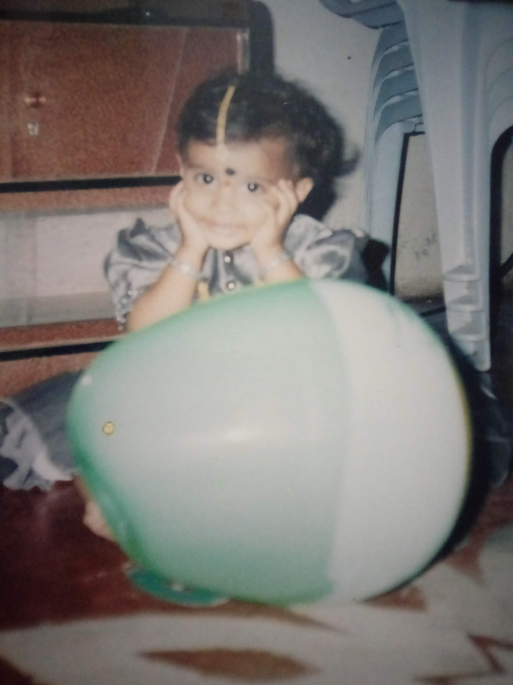
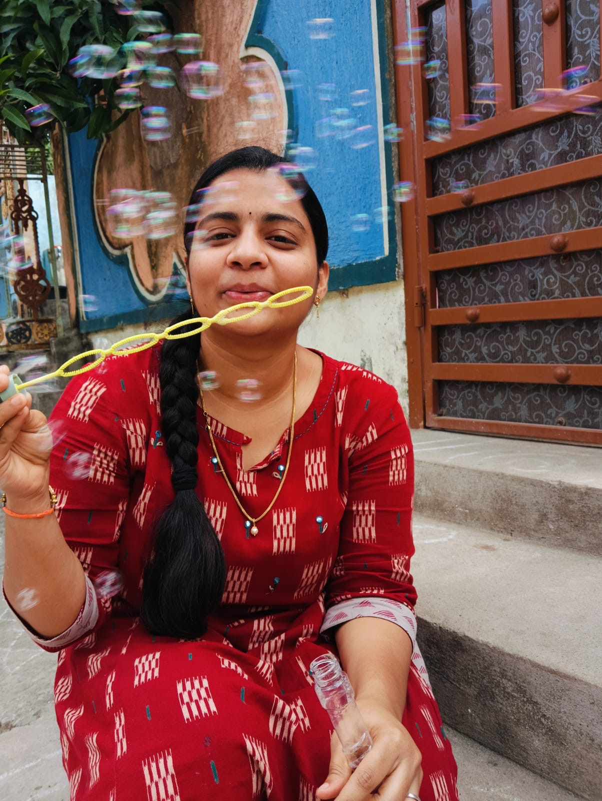
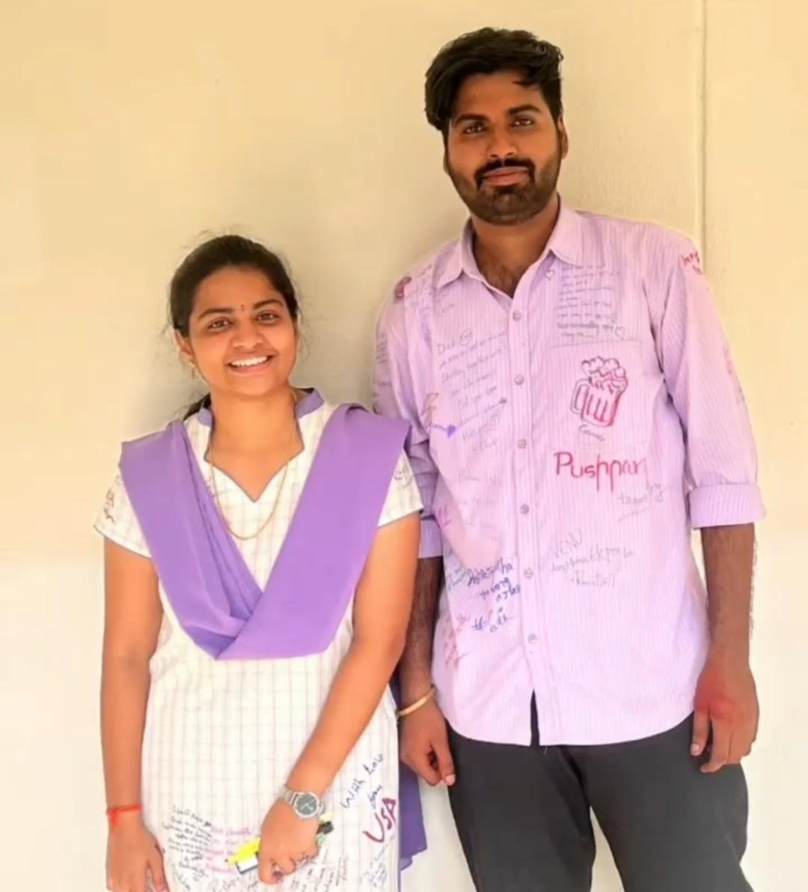
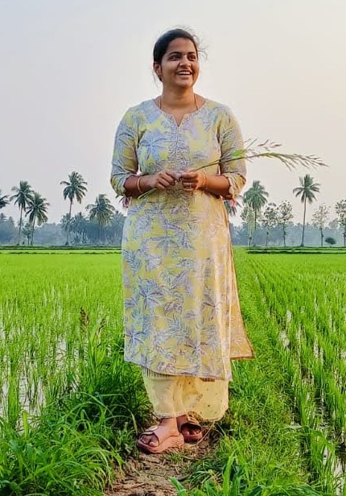
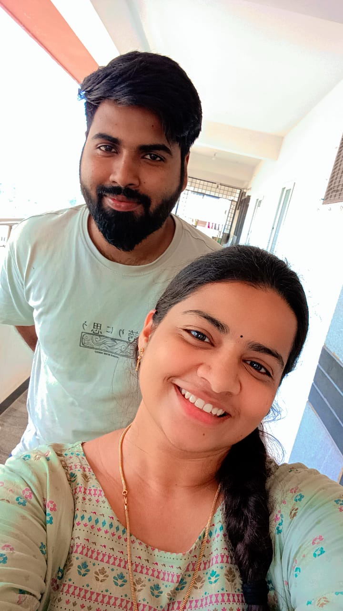
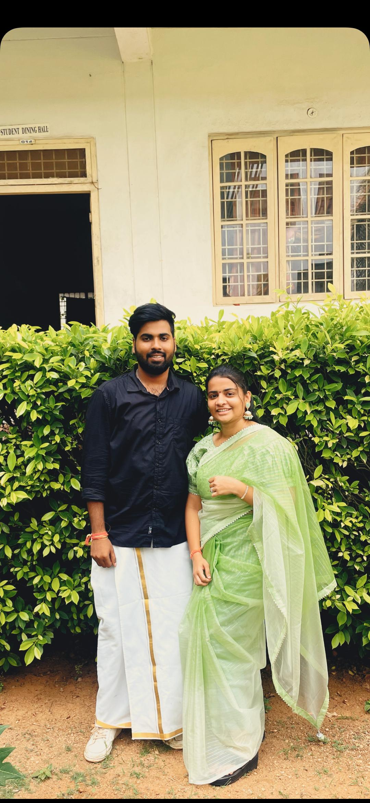
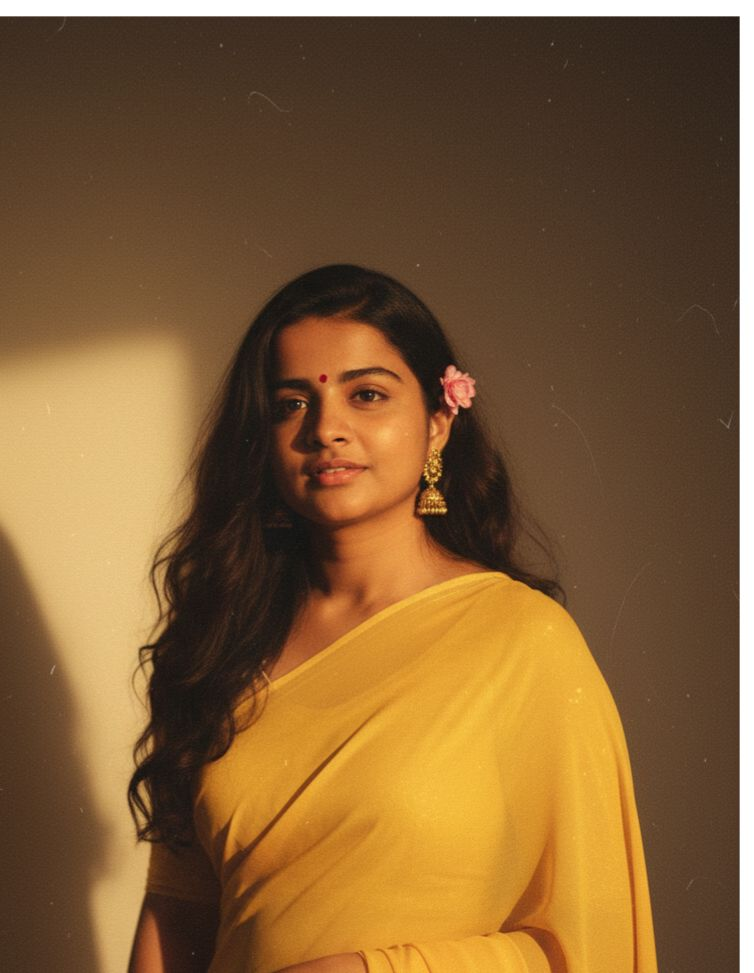

02 — The reason
Some people make life better.
And then there is you.
Ordinary days became funnier, conversations became longer, and random moments became memories worth keeping.
A little universe, made for one person
I made this little world for you. Take your time. ✦
02 — The reason
And then there is you.
Ordinary days became funnier, conversations became longer, and random moments became memories worth keeping.
03 — Classified information
Same person. Two identities. Maximum chaos.
04 — A new chapter
A new country. A master's journey. New places, new people, new stories waiting to happen.
05 — Ten little moments









06 — Extremely scientific
RESULT: Absolutely irreplaceable.
07 — No jokes for a second
Behind all the jokes, there is one thing I hope you always know:
You matter.
A lot.
08 — From me to you
09 — Make a wish
May the UK bring you incredible experiences, kind people, confidence, adventures, and a thousand reasons to call home and say, “You won't believe what happened today.”
10 — The final page
Stay weird. Stay kind. Keep laughing.
And never stop being Piggy. 💜